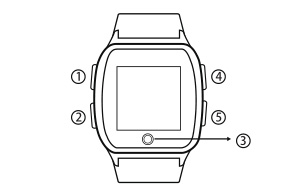

HT-990老人智能手錶使用手冊
按鍵及接口說明

① 報時/微聊功能鍵
報時功能：短按此鍵，進入語音報時功能。
微聊功能：長按此鍵，直接進入微聊介面，再長按該鍵。
可開始錄音，鬆開後即可發送語音給APP使用者。
② 開關機/SOS/電話接聽鍵
開啟或關閉電源：長按此鍵，可以開啟電源，在網絡接收不穩或手錶未被綁定的情況下長按此鍵則關機，正常狀態下，長按此鍵六秒以上,即可以強制關機。
SOS求救功能：手錶開機後，在網絡接收穩定及手錶已綁定的情況下，長按此鍵三秒，即可執行SOS報警功能。
接聽來電：當手錶顯示來電通知時，短按此鍵以接聽電話。
③ Home鍵/返回鍵（觸控按鍵）
選擇功能後，輕觸此鍵可返回主頁面。
④ 音量調節快捷鍵/上翻鍵/快速撥號鍵
音量調節快捷鍵：當手錶處於主介面時，短按此鍵，直接進入音量大小調節功能介面，此時再次短按此鍵可加大手錶整體音量。
往上翻頁鍵：手錶處於電話簿介面時，短按此鍵，可翻頁到上一個電話簿聯絡人。
快速撥號鍵：當手錶在主介面時，長按此鍵，可直接撥打電話給電話簿的第一位聯絡人。
⑤ 音量調節鍵/下翻鍵/快速撥號鍵
音量調節鍵：當手錶在音量大小調節介面時，短按此鍵可調低音量。
往下翻頁鍵：當手錶在電話簿介面時，短按此鍵，可翻頁到下一個電話簿聯絡人。
快速撥號鍵：當手錶在主介面時，長按此鍵，直接撥打電話給電話簿的第二位聯絡人。
綁定設備
步驟一：本手錶只支持GSM網絡，請使用標准的Nano-SIM卡。卸下手錶後蓋上的SIM卡蓋，再放上Nano-SIM卡，正確安裝完成後，長按開關機鍵開機。
步驟二：開啟已下載APP，按照APP的指引注冊新的用戶或登錄已有賬號，成功登錄後選擇需要綁定的設備型號 —「老人手錶」
步驟三：成功選擇「老人手錶」後，請掃描手錶後蓋上的二維碼或手動輸入設備的ID號進行綁定。
步驟四：綁定後即可通過APP對手錶進行相關的設置。
功能及使用說明介紹
1.實時位置查詢：通過APP點擊「首頁」可以實時查看手表的當前位置。
2.手錶時間設置：在APP設置項選擇「手錶時區和語言」，選擇所在地的對應時區，再提交即可成功設置。
3.電話簿：在APP的電話簿設置中添加最多10位電話聯絡人，成功保存後，手錶的電話簿會自動同步更新，手錶會默認電話簿中的前3位為SOS緊急聯絡人。
4.SOS：長按開關機/SOS鍵三秒後，手錶即啟動SOS報警功能，當無人接聽電話時，手錶會循環兩輪撥打求救電話給3位緊急聯絡人；若其中一位聯絡人接聽後則停止循環撥打；除了撥打電話外，手錶會同時發送求助短訊給3位緊急聯絡人，以便讓手錶使用者快速獲得援助。
5.通話：當手錶進入電話簿介面，選擇聯絡人後，點擊屏幕上「撥打」圖案，電話撥出並接通後，便可進行雙向通話。
6.來電防火牆：沒有在APP內設置的電話號碼無法撥入手錶進行通話。
7.吃藥提醒：通過APP可以給手錶設置三組不同的吃藥提醒時間。
8.運動與健康監測：提供計步功能、久坐提醒功能、運動提醒和心率檢測功能。
9.微聊：通過APP，可以給手錶發送文字或語音訊息，手錶則只可發送語音到APP。
10.手錶語言設置：在APP設置項選取「手錶時區和語言」，在語言項列表中選擇所需語言並提交即可。
11.手錶另外提供音量大小調節等；通過APP，還可以對手錶進行免打擾時間設置、情景模式設置、電子圍欄設置、手錶鬧鈴設置、找手錶、遠程關機、歷史軌跡查詢等功能操作。
APN設置
如果您的手錶使用了標準的Nano- SIM卡，並開通了數據功能而且有足夠的餘額，綁定後手錶仍然無法連接至手機APP，請通過APP設置手錶的APN。（因每間電訊供應商的APN碼不盡相同，請向手錶SIM卡的電訊供應商查詢相應的APN碼）。
設置方法：開啟APP→「我的」→「高級設置」→「APN設置」→輸入SIM卡電話號碼 →輸入APN及相關參數 → 提交 → 發送短信。
注意事項：在設置APN參數前，請確保手錶的GSM信號正常且使用APP的手機可正常發送短信給手錶內的SIM卡（手錶內的SIM卡需確保能夠正常接收短信）。
充電介紹
請使用手錶配備的專用充電線，手錶支持使用主流手機充電器進行充電，為支持環保，未隨機配置電源適配器，請選擇您身邊合適的手機充電器給產品充電即可。
配件
1.充電線
2.使用說明書
常見問題
1.為什麼無法開機？
答：可能由於運輸時間過長，電池耗盡電量導致，請連接充電器充電後會自動開機。
2.為什麼無法為手錶充電？
答：請確認充電線是否與機身接觸良好。
3.為什麼二維碼掃描失敗？
答：請調整手機攝像頭與二維碼之間的距離，或者在光線充足的地方再重新掃描。
4.每一台追蹤手錶，是否只能供一個帳戶使用?
答：不是。第一個綁定追蹤手錶的帳戶稱為主帳戶，主帳戶最多可加入位三位成員（子帳戶）監察追蹤手錶。子帳戶需先於APP注冊帳戶，再由主帳戶於APP「成員管理」授權子帳戶。主帳戶負責操控、管理、通訊和監察追蹤手錶，子帳戶用作通訊和監察追蹤手錶，並沒有操控和管理功能。
5.追蹤手錶可否在外國使用？
答：可以，需配合支援漫遊功能SIM卡或轉用支援當地2G網絡的SIM卡。如手錶未能接收當地網絡訊號，請於Apps重新設定APN (Access Point Name)。
6.為何追蹤手錶有定位功能仍需要SIM卡?
答：追蹤手錶需要流動數據傳送資料至衛星，所以需要電訊商提供流動數據服務。加上追蹤手錶有雙向通話功能，亦需要電訊商提供流動通訊服務。
注意事項
1.此產品為非防水設計，使用時請注意防水。
2.請將產品遠離火源、高溫高熱等極端環境。
3.本說明書中的產品圖片只限用於操作指導，產品請以實物為準。
4.為了給您提供更好的服務，我司會不斷升級和優化產品功能，如說明書所述內容與產品實際功能略有不同， 請以當前實物為準。
售後服務
請諮詢當地的業務人員或者我司售後服務中心。
聯繫我們
有任何問題或建議，歡迎您隨時聯繫我們。
中國大陸
官方微信：航通守護者
客服QQ:3106893070
服務熱線：0755-8601 8738
中國香港
服務熱線：+852-26273380
郵箱：cs-liteguardian@castelbeidou.com
海外
郵箱: sales@castelbds.com
公司網頁:www.lite-guardian.com
服務熱線:+8675586018742